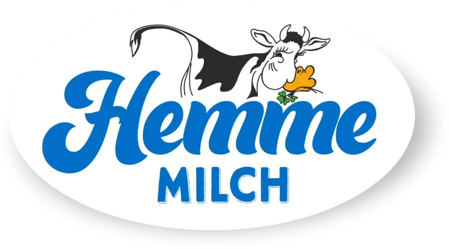

Die neue Startseite.
Zwei Richtungen.

Ein erster Entwurf der Startseite, direkt im Code statt als Skizze. Beide Richtungen nutzen dieselben Inhalte und den Markenauftritt aus dem Brandbook 2026, damit der Unterschied in der Gestaltung sichtbar wird. Unterseiten, Texte und Funktionen entstehen nach der Entscheidung für eine Richtung.
Gestrichelt markierte Stellen muss Hemme noch bestätigen.
Entwurf AFrisch gezapftModerne regionale Marke. Klar geführt, Produkte groß, der Weg von der Kuh ins Regal als 24-Stunden-Uhr beim Scrollen.Ansehen →
Entwurf BKuhle WeltLifestyle und verspielter. Offener Kühlschrank, Sorten zum Durchscrollen, Polaroids vom Hof und farbige Karten.Ansehen →
Zur Freigabe am 01.10.SitemapAufbau der ganzen Website: Menü, Unterseiten, offene Entscheidungen und die wichtigsten Wege der Besucher.Ansehen →
Aktueller Stand
Ergebnisse aus dem Termin am Donnerstag, 01.10.2026. Weiter geht es mit Entwurf A.
Eindruck
- Erster Eindruck sehr positiv, Entwurf A wird bevorzugt.
- A wirkte etwas zu bunt: Produkte jetzt in Blauabstufungen der CI, Farben nur noch als Kennung je Kategorie.
- Aus B übernommen: Wertschöpfung, Kühlschrank und Polaroids.
- Top-Banner bleibt.
Umgesetzt
- Historie statt „Von der Kuh zu euch“, keine 24-Stunden-Aussagen mehr
- „Vom Saatkorn bis zum fertigen Milchprodukt“
- Hinweis „Noch kein Hemme in eurem Markt? Fragt gerne vor Ort nach!“
- Partnerbereich mit Logo-Laufband
- Link zu hemme-milch.de im Footer, Hinweis bei Über uns
- Aquarell-Wiese im Footer weniger gezoomt
Offen bei Hemme
- Partnerliste, Logos und Infos der Partner
- Produktinformationen und Produktübersicht
- Historische Bilder (Ansprechpartnerin: Ilsabe)
- Inhalte zum Bruderunternehmen Hemme Milch
- Ordnerstruktur mit Bildern für das Bildportal